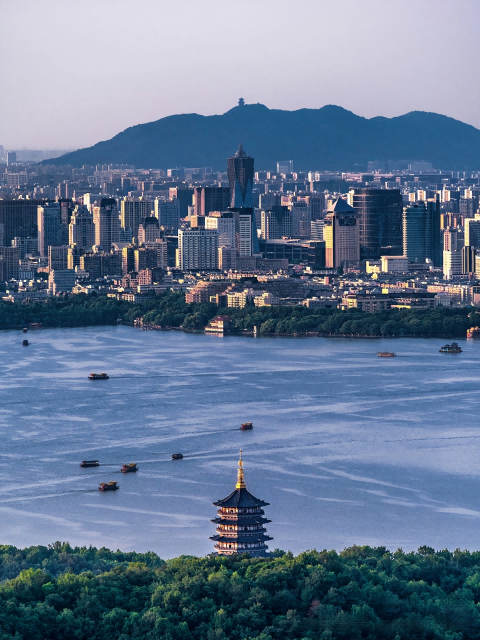
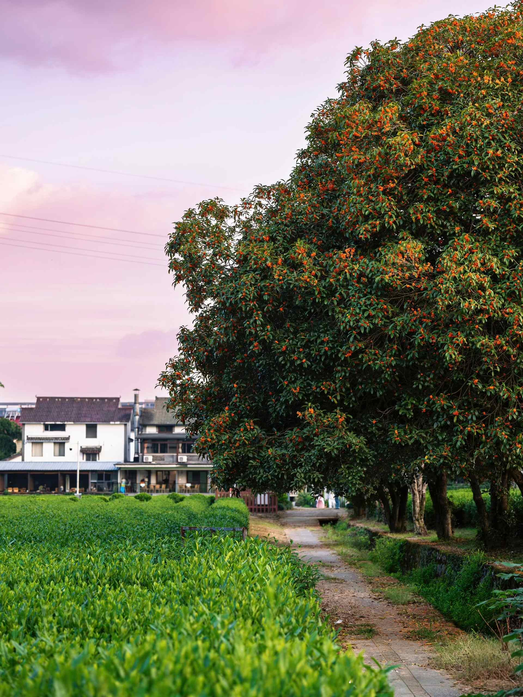
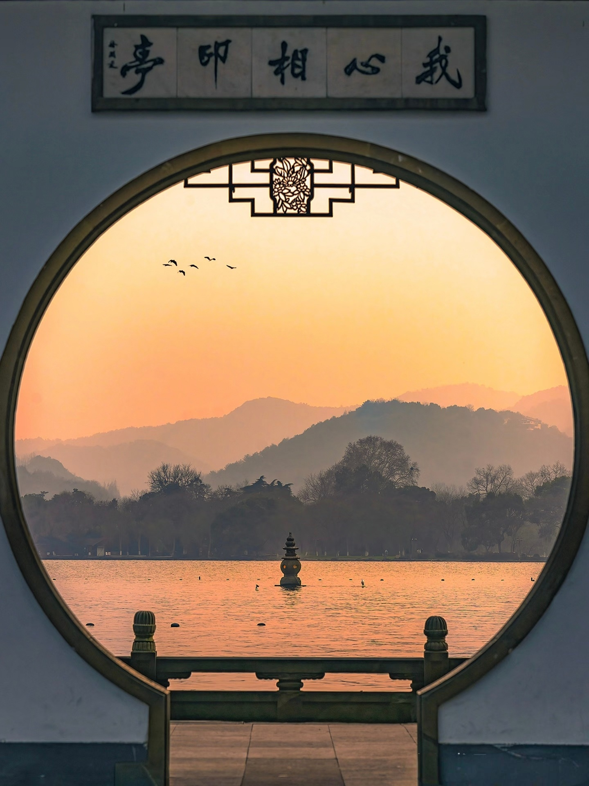
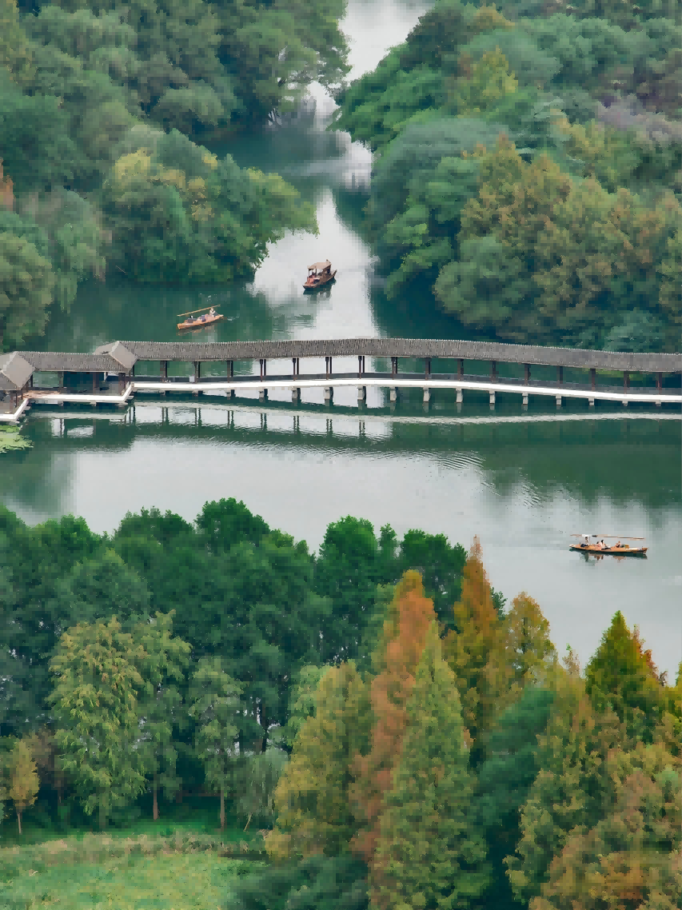

12 Quieter Places to Explore in Hangzhou

Hangzhou has a problem: West Lake is so famous that it eats all the attention. Tour groups pile off buses at the same three photo spots, and most visitors leave thinking they’ve “seen Hangzhou.” They haven’t. The city’s best experiences — empty temples, bamboo forests with nobody in them, tea terraces without a selfie stick in sight — are hiding in plain sight, 20 minutes from where everyone else is standing.
This is the list I give friends on their second visit. Some of these places are genuinely quiet; others are known to locals but invisible to tourists because they don’t have English signs or TripAdvisor pages. All of them are worth your time.
Manjuelong (满觉陇)
A hillside village of tea houses and stone paths wedged into the hills south of West Lake. In autumn (September–October), the osmanthus trees bloom and the entire valley smells like perfume — it’s the best smell in Hangzhou, and a local autumn ritual is to come here for osmanthus tea and osmanthus cakes. Even outside autumn, Manjuelong is worth visiting for the stone steps, the tea terraces, and the complete absence of tour buses.
Walk the stone path that climbs from the village center up toward the tea terraces. You’ll pass small tea houses with terrace seating overlooking the valley. Stop at one, order a pot of osmanthus Longjing, and sit until the light shifts. Continue uphill and you’ll reach the Hangzhou version of the “thousand torii” — a covered walkway of hanging lanterns and a small shrine at the top with a panoramic view of West Lake. This ridge-top path is almost always empty.
How to get there: Taxi or DiDi to 满觉陇 (show the driver these characters). No metro station nearby — it’s a 25-minute walk from the nearest bus stop. Go on a weekday morning for maximum solitude.
Jiuxi (Nine Creeks Misty Forest)
A forested stream valley southwest of West Lake where nine creeks converge into a single path through the woods. The name means “Nine Creeks, Mist Among the Trees,” and on a morning after rain it lives up to every syllable: mist rising through the tree canopy, stone paths crossing the streams on small bridges, and the sound of water everywhere. It’s one of the most beautiful walks in Hangzhou, and tourists almost never go because it’s not near a metro stop and doesn’t appear in English-language guides.
Start at the Jiuxi bus stop (九溪站) entrance and walk the main path — a flat, paved road shaded by trees — for about 3.5 km. The path follows the streams inland, crossing them at several points on stepping stones. At the center of the valley is a small waterfall and a pond that reflects the surrounding trees. From here, you can either retrace your steps or continue uphill through the tea terraces to Longjing Village — the hike connects Jiuxi to the tea hills, and the transition from forest to open tea fields is one of the best landscape transitions near Hangzhou.
Yunqi Bamboo Path (云栖竹径)
A 1 km stone path through a cathedral-tall bamboo forest on the southern edge of the city. The bamboo trunks rise 20 meters on either side, the light filters green through the leaves, and the only sound is the creak of bamboo in the wind. At the path’s end, a steep stone staircase climbs to a small temple at the top of the hill with a view over the bamboo canopy.
Compared to the bamboo forests in Anji or Moganshan (which are genuinely overrun), Yunqi is close, cheap, and quiet. It’s also cooler than the city in summer — a natural air-conditioned walk when the temperature elsewhere is pushing 35°C. Go early morning for the best light through the bamboo, or late afternoon when the slanting sun turns everything golden-green. Pair it with a visit to Jiuxi (above) — they’re 10 minutes apart by taxi.
Grand Canal North End — Gongchen Bridge & Xiaohe Straight Street
The Grand Canal (京杭大运河) is the world’s longest man-made waterway — 1,776 km from Beijing to Hangzhou — and its southern terminus is in Gongshu District. The area around Gongchen Bridge (拱底桥), a stone arch bridge built in 1631, has been preserved as a cultural district with waterfront paths, small museums, and an old factory turned into a creative park.
What makes it hidden: tourists go to West Lake. Even Chinese tourists go to West Lake. The canal area gets locals walking their dogs, couples taking evening strolls, and a handful of visitors who’ve done their research. The best time is late afternoon into evening: start at Xiaohe Straight Street (小河直街), a preserved canal-side lane of whitewashed buildings with craft shops and tea houses; walk north along the canal to Gongchen Bridge; arrive at the bridge around sunset when the stone arches are lit from below and the lanterns come on. There are museums along the way — the China Umbrella Museum and China Knife, Scissors & Sword Museum — which sound absurd but are genuinely interesting and free.

China National Tea Museum (中国茶叶博物馆)
Set in the tea hills behind West Lake, this is a world-class museum about tea — its history, varieties, production, and cultural role across China — and it’s almost always nearly empty. The museum complex is built into the hillside: pavilions connected by garden paths, tea plants growing between the buildings, and a tea house where you can taste what you’ve just learned about.
Why it’s hidden: it’s between Longjing Village and the main road, not visible from either, and most people go to the tea villages to drink tea without ever realizing the museum exists. Combine it with a morning at Longjing Village — walk through the village, then follow the path to the museum for an hour of context that makes the whole tea experience richer. The museum’s tea house serves better tea than most of the commercial tea houses in the villages, and at better prices.
Xiaoyingzhou Island — the ¥1 RMB Pagodas
The pagodas are famous — they’re on the ¥1 RMB note — but most visitors only see them from the shore. What most skip: taking the boat out to the island itself. Walking the island’s ring path, crossing the zigzag bridges, and seeing the pagodas up close from the water’s surface is an entirely different experience. The boats leave from several docks around the lake, and the round-trip ticket (~¥55–70, at time of writing) includes island entry. Go on a weekday morning — the island feels peaceful when the tour groups aren’t there. During the Mid-Autumn Festival, candles are lit inside the pagodas and the reflection combines with the moon — it’s a local ritual.

Best Hillside Walks with City Views
Hangzhou is ringed by forested hills, and the ridge trails above West Lake offer the best views of the city — better than any pagoda or observation deck — with zero crowds. Two routes worth knowing:
Baoshi Hill (宝石山): The easiest and most accessible. The trailhead is just north of Broken Bridge (断桥) on Beishan Road. It’s a 20-minute climb up stone steps to Baochu Pagoda (保俶塔), a slender stone pagoda from 963 AD that’s one of Hangzhou’s most recognizable silhouettes. From the pagoda, the ridge path continues west with panoramic lake views. Go at sunrise for the best light — the sun rises behind the pagoda and spills over the lake. Total round-trip: 1–1.5 hours.
Laohe Mountain (老和山) to Beigao Peak (北高峰): A longer ridge hike starting near Zhejiang University’s Yuquan campus. Follow the trail north along the ridge toward Beigao Peak — you’ll pass through tea fields, bamboo groves, and multiple lookout points over the city and the lake. At Beigao Peak, the Lingshun Temple and its massive bell offer a satisfying endpoint before descending to Lingyin Temple. Total: 2.5–3 hours one way. Fewer people do the full ridge because it requires some effort; the payoff is solitude and views.
Jade Emperor Summit (玉皇山)
Jade Emperor Hill sits on the south side of West Lake, and its summit has the best panoramic sunset view in Hangzhou — the lake on one side, the Qiantang River on the other, and the city spread between them. At the top is the Fuxing Pavilion (福星观), a Taoist temple complex that’s been here in some form since the Tang Dynasty.
Unlike Leifeng Pagoda (crowded, ¥40, 5 PM closing), Jade Emperor Summit is cheap (~¥10), open later, and almost empty. The climb is a moderate 30-minute stone staircase through forest — steep enough to keep tour buses away, easy enough for anyone in reasonable shape. Time it so you reach the summit an hour before sunset. Bring water. Plan to be back down before dark. The path has no lighting; do not attempt the descent in rain or after sunset.
Wugui Pond (乌龟潭)
Tucked behind Yanggong Causeway (杨公堤) on West Lake’s western shore, Wugui Pond is what locals mean when they say “the hidden West Lake.” The name means “Turtle Pond,” and the water here is startlingly clear — you can see straight to the bottom. Cherry blossoms line the banks in spring, and in late March the forest floor explodes with purple February orchids (二月兰). The best way to experience it: take a hand-rowed boat (摇橹船) from one of the nearby docks and drift into this pocket of green silence, where the only sounds are birds and oars dipping into water.
How to get there: Bus to Chishanbu (赤山埠) stop, then walk west along the water. It’s about 900 meters south of Yuhu Bay — the two are easily combined into a single afternoon walk. Free, open all day, no entry gate.

Yuhu Bay (浴鹄湾)
If West Lake’s eastern shore is where the crowds are, Yuhu Bay is where they aren’t. Deep in the western reaches of the lake, this inlet is surrounded by bamboo groves, old vines, and hills reflected in still water. The centerpiece is Jihong Bridge (霁虹桥), a long covered corridor bridge that stretches across the water — one of the most photogenic spots in Hangzhou, especially in mist or light rain when it looks like a Song-dynasty painting come to life. It’s a favorite for traditional-style portrait photography, but on weekdays you might have it entirely to yourself.
How to get there: Navigate to 浴鹄湾 and follow the stone path inward. Walk across Jihong Bridge, then follow the lakeside trail north toward Wugui Pond and eventually to the Su Causeway. The entire western-shore walk — from Yuhu Bay through Wugui Pond to the causeway — takes about two hours and shows you the West Lake most visitors never see.
Gushan / Solitary Hill (孤山)
Solitary Hill is West Lake’s only natural island — connected to the northern shore by the Bai Causeway — and it packs more cultural history per square meter than anywhere else on the lake. This was the site of an imperial palace during the Southern Song Dynasty, and later a Qing-dynasty royal library (文澜阁). Today it houses the Xiling Seal Society (西泠印社), China’s oldest seal-carving academy, tucked into hillside pavilions with lake views; the Zhejiang Provincial Museum (浙江省博物馆); and Zhongshan Park (中山公园), built on the former palace grounds. In early spring it’s famous for plum blossoms (孤山探梅); in late autumn, the plane tree avenue along the northern shore turns golden. Everyone walks the Bai Causeway past Solitary Hill, but few climb the hill itself or explore the museums, pavilions, and plum groves hidden inside.
How to get there: Walk from Broken Bridge along the Bai Causeway, or take a bus to 西泠桥 or 新娘子 stops. The hill is low and gentle — more a stroll than a hike. Best combined with a morning lake walk.
Baihe Peak (白鹤峰)
From Manjuelong No.75 (满觉陇 75号), a small path heads uphill past Hangzhou’s famous “Ghibli tea house” (千与千寻汤屋) — a moss-covered building tucked into the hillside that looks like it wandered out of a Miyazaki film — and through terraced tea fields to Baihe Peak (白鹤峰). From here you get a clear view over West Lake: Three Pools Mirroring the Moon, Leifeng Pagoda, and the Su Causeway spread out below. But don’t stop here. Continue uphill another 10 minutes to Guiren Pavilion (贵人亭) on the ridgeline, where the view opens up on both sides: West Lake and the old city to the north, the Qiantang River and the glass towers of the new CBD to the south. It’s one of the best panoramic views in Hangzhou, and almost nobody makes it past the tea fields.
How to get there: Taxi, bus, or shared bike to 满觉陇 (Manjuelong). Find the small path beside No.75 and follow it uphill through the tea terraces. The climb to Baihe Peak takes about 20 minutes; another 10 minutes to Guiren Pavilion. Free, no gates, best on a clear morning.
→ How to use Amap in China
⛰ Ready to explore the Hangzhou tourists miss?
Combine these hidden spots with the core itinerary — West Lake, Lingyin, and the tea villages.
3-Day Hangzhou Itinerary →📋 Landing in China? Get the free arrival checklist
Alipay setup, VPN, eSIM, and the exact steps for your first 48 hours — all in one place.
Send Me the Checklist →